San Nicolás
Electrónica Básica
— Resumen
Recorrido semestral por los conceptos, herramientas y componentes fundamentales de la electrónica.
Docente
Ing. Christopher Ruiz
Voltaje, Corriente y Resistencia
La analogía del agua (Cap. 1.3): Entendiendo la electricidad con algo que ya conoces.
💡 Las tres magnitudes
Voltaje (Voltios)
La "presión" que empuja los electrones por el cable. Sin voltaje, no hay movimiento.
Corriente (Amperios)
El "caudal" o flujo de electrones. Es lo que hace que los componentes funcionen.
Resistencia (Ohmios)
El "estrechamiento" del tubo que frena y controla el flujo de corriente.
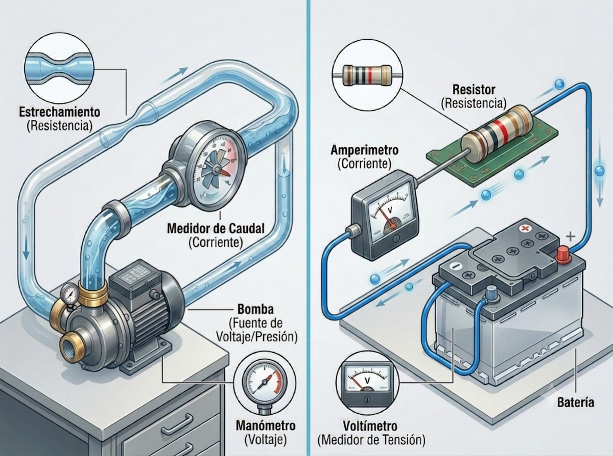
El Multímetro
Tu instrumento principal: puertos, zonas de medición y consejos de seguridad (Cap. 2).
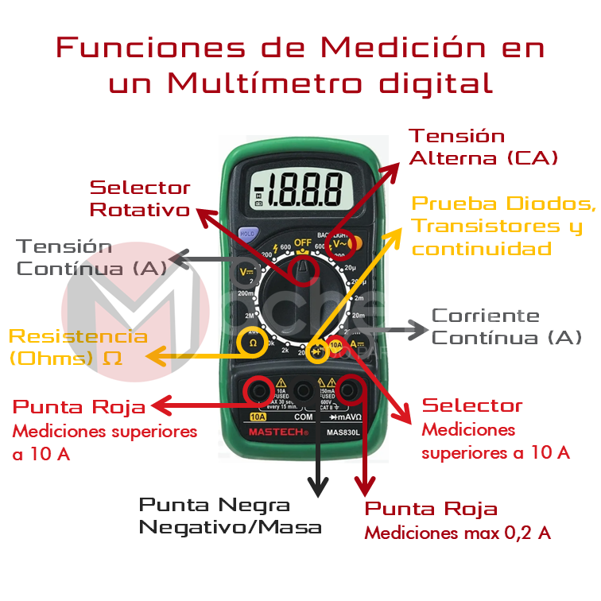
Puertos Clave
COM (Negro): Puerto común. Siempre conectar el cable negro aquí.
V/Ω/mA (Rojo): Para medir voltaje, resistencia y corrientes pequeñas (bajo 200mA).
10A (Rojo): Solo para medir corrientes muy altas. Rara vez se usa en el laboratorio de aula.
💡 Tips de Laboratorio
Empieza en el rango mayor
Si no sabes el voltaje aproximado, parte siempre en el rango más alto (ej. 200V) e ir bajando.
Continuidad = pitido
El símbolo del altavoz (🔊) activa el modo continuidad: emite un pitido si el circuito está cerrado.
Resistencia = circuito apagado
Para medir resistencias, el circuito siempre debe estar desconectado de la energía.
Técnicas de Medición
Cómo posicionar las puntas del multímetro en el circuito.
⚡ Medir Voltaje — En Paralelo
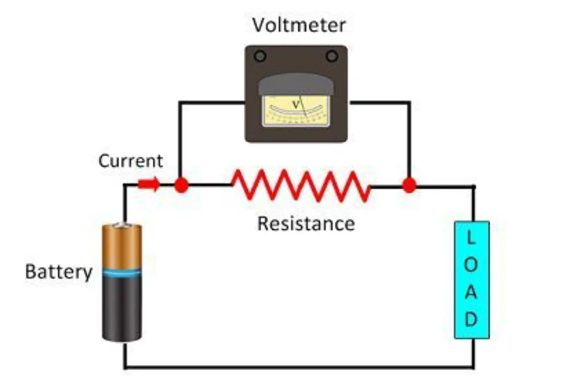
Las puntas tocan los dos extremos del componente sin interrumpir el flujo del circuito (circuito encendido).
🔗 Medir Corriente — En Serie
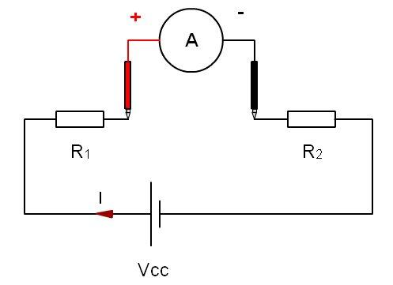
Debes cortar el circuito e insertar el multímetro en medio, para que la corriente pase obligatoriamente por él.
La Ley de Ohm
La ecuación fundamental que vincula Voltaje, Corriente y Resistencia.
Corriente
Corriente = Voltaje ÷ Resistencia
⭐ Voltaje (Base)
Voltaje = Corriente × Resistencia
Resistencia
Resistencia = Voltaje ÷ Corriente
Medir resistencia (Ω) es seguro, pero hay una regla de oro irrompible:
NUNCA midas resistencia en un circuito energizado.
La Protoboard
Conexiones sin soldadura: la herramienta para prototipar circuitos en segundos.
Reglas de Conexión
Las filas centrales están conectadas verticalmente en grupos de 5 agujeros (A-B-C-D-E).
La ranura central aísla los dos lados para insertar circuitos integrados sin que sus patas se cortocircuiten.
Las líneas rojas/azules de los bordes son buses de alimentación que recorren toda la placa (VCC y GND).
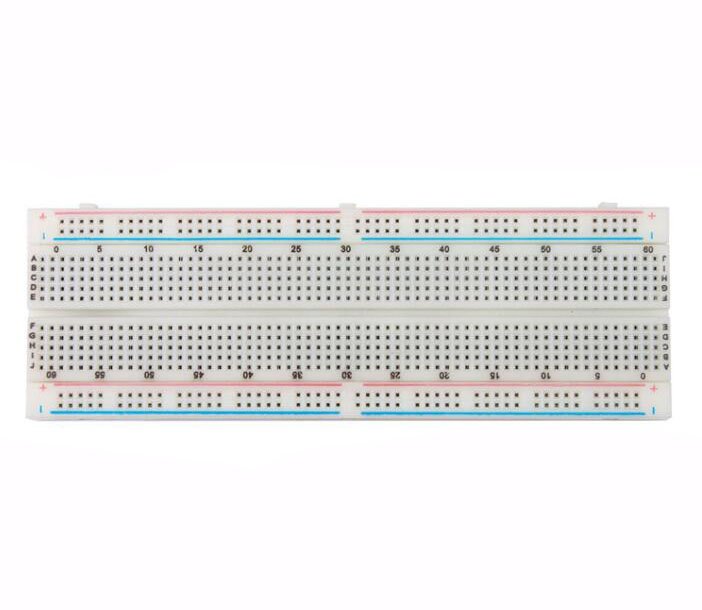
Diagramas y Esquemas Eléctricos
Leer un esquema es la habilidad más importante de un electrónico.
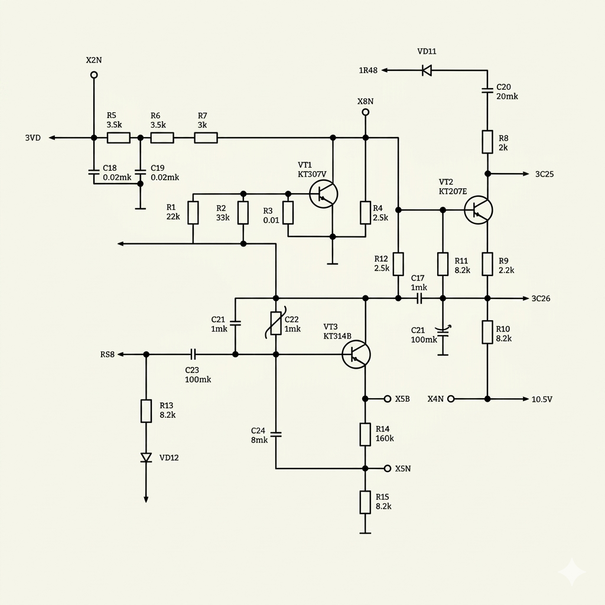
¿Cómo leer un esquema?
Las etiquetas identifican cada componente: R1 = 220Ω (primera resistencia), D1 = LED (primer diodo). Siempre están acompañados de su valor.
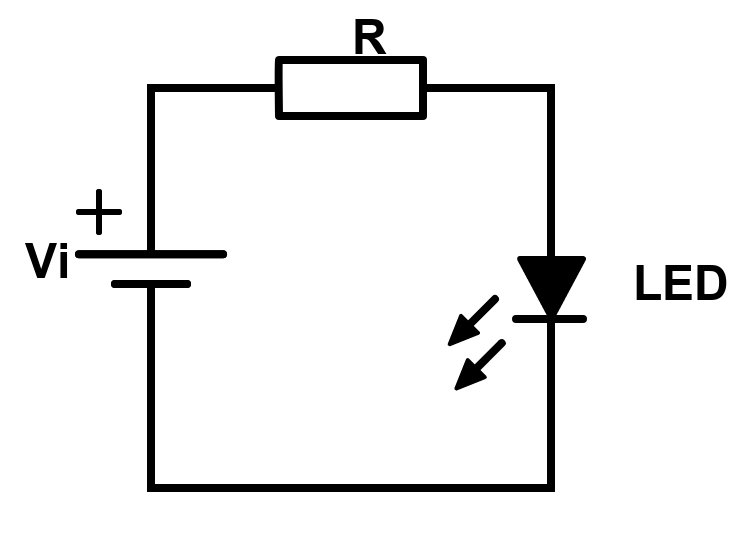
Ejemplo: Circuito LED con resistencia limitadora
Serie vs. Paralelo
Dos maneras distintas de conectar componentes con consecuencias muy diferentes.
🔗 En Serie
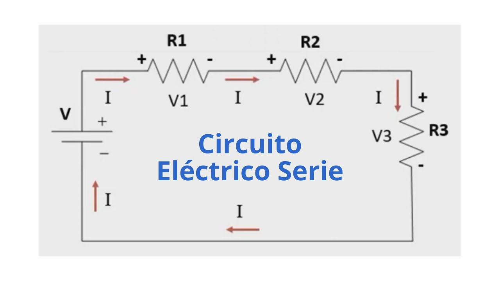
Un solo camino. Si un componente falla, se apaga todo el circuito.
La corriente es igual en todos los elementos. El voltaje se reparte.
🛤️ En Paralelo
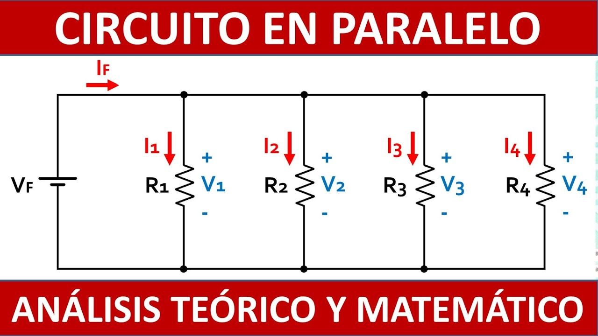
Cada componente en su propia rama. Si uno falla, los demás siguen funcionando.
El voltaje es igual en todas las ramas. La corriente se divide.
Las Resistencias
Limitan el flujo de corriente. Su valor se lee con el código de colores.
Física del Componente
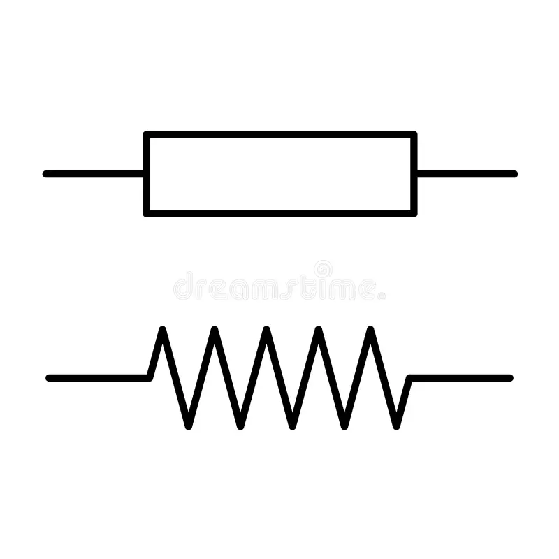
Son cilindros pequeños con dos patas y bandas de color que codifican su valor en Ohmios (Ω).
Las de laboratorio son de 1/4 watt (0.25 W) de película de carbono. No tienen polaridad: puedes insertarlas en cualquier sentido.
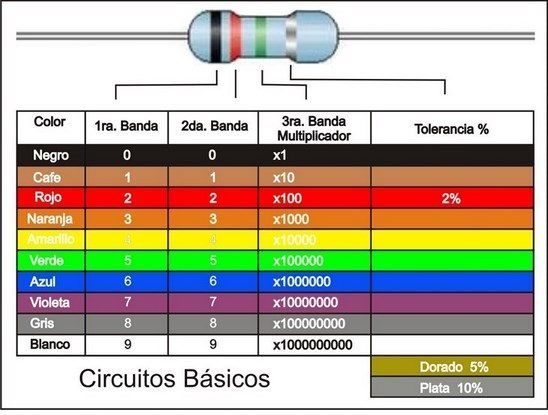
Los Condensadores
Almacenan y liberan energía eléctrica. Fundamentales en filtros y estabilizadores.
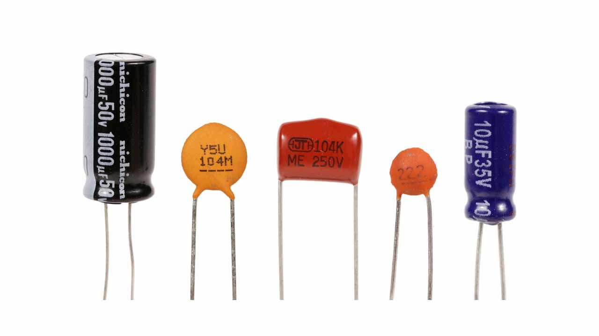
Curva de Carga y Descarga
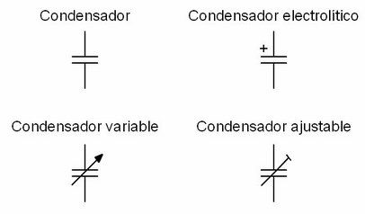
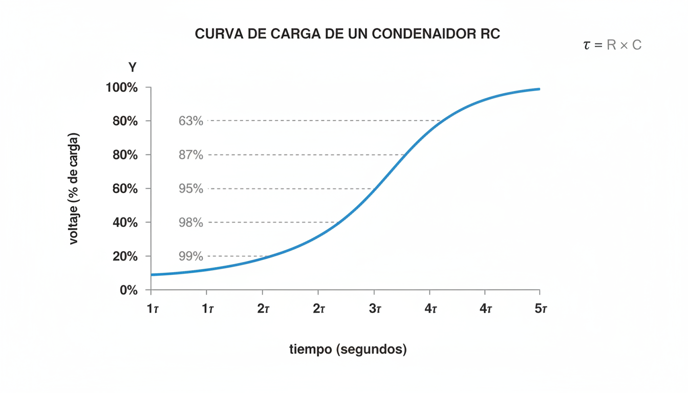
Se cargan exponencialmente hasta igualar el voltaje de la fuente.
Se descargan de la misma manera cuando la fuente se retira.
Se miden en Microfaradios (μF). Los electrolíticos tienen polaridad: el lado marcado con «−» va al GND.
El Diodo y el LED
Semiconductores que permiten el paso de corriente en una sola dirección.
Polarización del Diodo
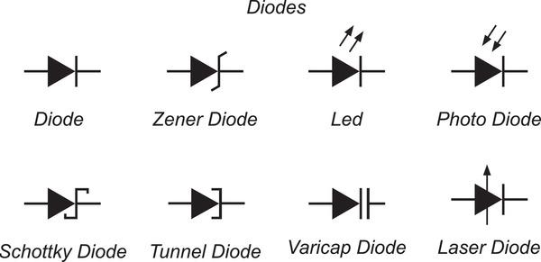
Directa: (+) al ánodo, (−) al cátodo → electrones fluyen libremente.
Inversa: Bloquea el paso de corriente como una válvula cerrada.
El LED — Ánodo y Cátodo
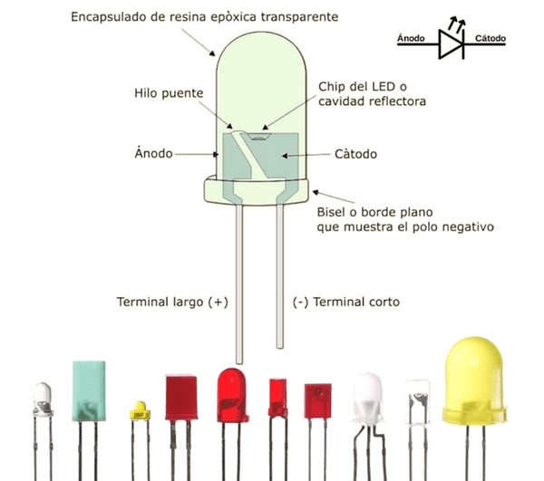
La pata larga = Ánodo (+). La pata corta = Cátodo (−).
Para protegerlo, siempre conectar una resistencia en serie:
R = (Vfuente − VLED) / ILED
Ejemplo: (5V − 2V) / 0.02A = 150 Ω
El Transistor NPN
Tres zonas de operación: Corte, Activa y Saturación (2N2222 / S8050).
Símbolo y Terminales (E-B-C)
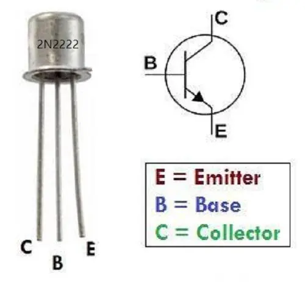
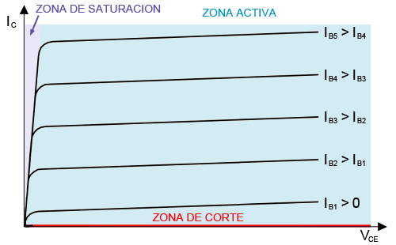
Pinout físico (vista plana): Emisor (E) · Base (B) · Colector (C)
Las 3 Zonas de Operación
Actúa como interruptor abierto. No hay corriente en la Base → no conduce nada entre Colector y Emisor. El transistor está "apagado".
Actúa como amplificador y resistencia variable. Una corriente pequeña en la Base controla una corriente mucho mayor (β veces) entre Colector y Emisor. Aquí vive la amplificación de señal.
Actúa como interruptor cerrado. Con suficiente corriente en la Base, el transistor conduce al máximo entre C y E. El transistor está "encendido" completamente.
Leyes de Kirchhoff
El fundamento del análisis de circuitos complejos: ¿A dónde va la energía?
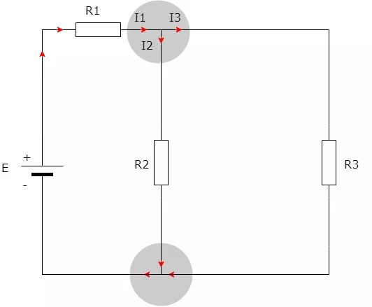
Ley de Nodos (KCL)
"Todo lo que entra tiene que salir." La suma de corrientes que llegan a un nodo es igual a la suma de corrientes que salen.
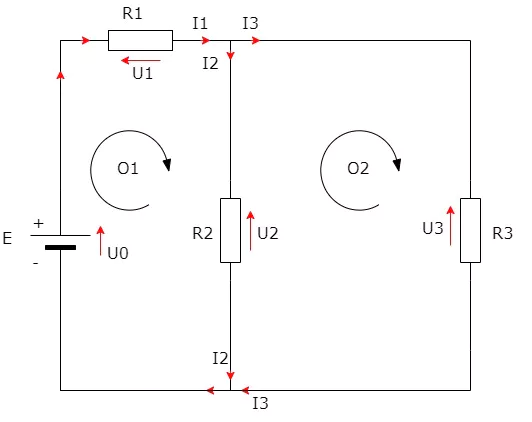
Ley de Mallas (KVL)
En un circuito cerrado, la suma de los voltajes entregados por la fuente menos los consumidos por las cargas es siempre cero.
Cada circuito que armes
te hace mejor ingeniero.
"La electrónica no se aprende solo mirando: se aprende conectando, probando y equivocándose.
Cada error en la protoboard es una lección que ningún libro puede enseñarte."
— Ing. Christopher Ruiz · Electrónica Básica Aplicada